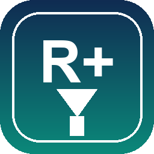

Ücretsiz sürümün tüm gücü + Pro özellikleri
Tek seferlik ödeme, ömür boyu lisans. 3 cihazda kullanın. Lisans anahtarı anında e-posta ile teslim edilir.
| Özellik | Ücretsiz | Pro |
|---|---|---|
| Çok parçalı indirme (32 parça) | ✓ | ✓ |
| Torrent + magnet (aria2) | ✓ | ✓ |
| Site Grabber, kuyruk, zamanlayıcı | ✓ | ✓ |
| Koyu / açık tema | ✓ | ✓ |
| Çalma listesi toplu indirme YouTube, Spotify, SoundCloud — listedeki tüm videolar tek seferde | 🔒 İlk video | ✓ Tam liste |
| Gelişmiş zamanlama Haftalık, tekrarlayan görevler | 🔒 | ✓ |
| Cihaz sayısı | 1 | 3 |
| Öncelikli güncelleme bildirimi | — | ✓ |
| Rozet gizleme (arayüz) | — | ✓ |
| Öncelikli e-posta destek | — | ✓ |
Nasıl çalışır: Ödeme sonrası lisans anahtarı
(RDM1-XXXX-XXXX-XXXX-XXXX) ekranda ve e-postada gösterilir.
Uygulamada Yardım → Lisans / Pro Özellikler menüsünden anahtarı
girin — Pro özellikleri anında açılır. İnternet gerekmez (offline doğrulama).
Çoğu kullanıcı için ücretsiz sürüm tamamen yeterlidir: 32 parçalı indirme, torrent, Site Grabber, kuyruk ve zamanlayıcı dahil tüm temel özellikler reklamsız ve sınırsızdır.
Pro'ya ihtiyacınız var mı? Sadece şunlardan biri gerekiyorsa: tek tıkla tüm çalma listesini indirme, haftalık tekrarlayan görevler, veya 3 cihazda aynı lisans.
.retro_plus_license.json). Hiçbir veri sunucuya gönderilmez.